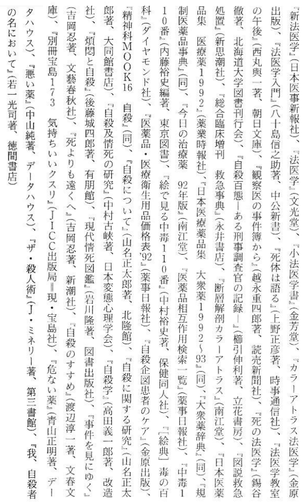

Additional information#
Metadata#
Japanese version#
Title: The Complete Suicide Manual (完全自殺マニュアル; Kanzen Jisatsu Manyuaru)
Author: Tsurumi Wataru (鶴見 済)
Publisher: Ohta Publishing (太田出版)
ISBN-13: 9784872331264
Publication date: 1993-07-07
Illustration: Kazunori Sadahiro (サダヒロ カズノリ)
Book Design: Seiichi Suzuki Design Office (鈴木成一 デザイン室)
Taiwanese version#
Title: The Complete Suicide Manual (完全自殺手冊; Wanquan Zisha Shouce)
Publisher: Ever Jasmine Publications, Inc. (茉莉出版事業公司)
Publication date: 1994-12-01
Translator: Ding Shen (丁申)
ISBN-10: 957-9146-03-9
The original metadata page is as below:
THE COMPLETE MANUAL OF SUICIDE
完全自殺手冊
台北國際中文版
1994年12月 1日 初版
作 者: 鶴見 濟
譯 者: 丁 申
美術編輯: 黃恭婉
出 版: Ever Jasmine Publications, Inc.
茉莉出版事業公司
局版台業字6244號
台北市敦化南路 2段65號 8樓 A室
phone : (886 2)754-8933
fax : (886 2)784-9496
印 製: 唐山彩色照相製版有限公司
發 行: 黎欣圖書有限公司
台北縣三重市大智街 139號
phone : (886 2)988-6129
(C) 1994 Wataru Tsurumi
Chinese translation rights arranged with
Wataru Tsurumi through Japan Uni Agency, Inc.
and Ways & Bridges Copyright Agency, Inc.
(C) 1994 Ever Jasmine Publications, Inc.
ISBN 957-9146-03-9
本書如有缺頁破損等情況, 請寄回發行公司更換
定價: 新台幣 250元
Chinese version#
Translator: Rena, or YuriMiller
Publisher: GitHub
Publication date: 2018-08-05
English version#
Translator: Kotaaru Shoukougun, or CotardSyndrome
Publisher: GitHub
Publication date: 2024-04-01
Some translation notes#
The translation is based on the Taiwanese edition, but occasionally I had to refer to the Japanese edition to fix mistakes. There are plenty of mistakes in the Taiwanese edition, but I think I have caught most of them.
There are two kinds of footnotes. The first kind are formatted like this <sup>...</sup>, and those are produced by Rena. The second kind are formatted like this [^...], and those are produced by me. A lot of the footnotes by Rena are pretty useless and I deleted them.
Most of the long footnotes are excerpted from Wikipedia. I’m not bothering with precise citations. If you really want to track them down, you can Google them.
The document is mostly compliant to the extended Markdown syntax. Why mostly compliant? Well, it’s because Markdown is not a fully standardized format, and different parsers may interpret the same document differently.
Citations#
There are three kinds of citations in the book.
The citations for the dosage of substances appearing in Chapter 1 are keyed with English letters from A to M.

Inline citations (footnotes) are keyed with numbers from 1 to 70. These numbered inline citations are not reproduced in the English translation (because I’m lazy).

There are also general citations, which are materials the author referred to in general during the general writing, but not at any particular place.

Publication history#
When the book was published in 1993, it was an immediate hit across Japan, eventually selling over one million copies. In 1997, it was finally designated as “harmful to the youth”, and thus could not be sold to people under 18. However, it remains legal to sell to adults and is still available in Japan.
Riding on the waves of the popularity, Tsurumi anthologized another book that was published in 1994. 『ぼくたちの「完全自殺マニュアル」』 (Our ‘Complete Suicide Manual’). It contains two parts, the first part describes how the Japanese society viewed The Complete Suicide Manual. The second half contains reader letters sent to the author about the book. As far as I can see, the book is like last year’s hamburgers – tasty at the time, but it’s not going to last. In any case, the book is not available on the Internet.
Both books were quickly translated and published in Taiwan in 1994, and then banned in 1995. The book was also banned in Hong Kong. As for China, though there is no explicit ban, it would have never made across the publisher’s office anyway.

On 1993-10-20, the Yomiuri Shimbun reported that the bodies of two suiciders were found in Aokigahara, with the book in their arms. The police found a third person who appeared to be planning to suicide was nearby, also holding this book. The police took them away from the scene. The whole country was in an uproar, pushing the book’s sales to the top of the rankings.
There has never been a printed Chinese edition, though the Taiwanese edition has been circulating online for a while. In 2018, YuriMiller (GitHub username) or Rena (self-identified name in the document) uploaded a Chinese edition to GitHub. As described by Rena,
I have completed part of the translation, proofreading, and annotation myself, and I will say goodbye to this world soon. This book is my final gift.
There has never been a printed English edition either, though continuing the tradition, I made the translation myself.
The author, Tsurumi Wataru#

From reading the Japanese Wikipedia on the author, we can recognize him to be a leftist. This makes it easy to understand why many case studies have a leftist feeling.
Born 1964. Japanese freelance writer. He graduated from the Department of Sociology of the University of Tokyo.
The 2012 Declaration of Post-Capitalism focused on the economic system as a reason why people cannot live comfortably. He criticizes economic growth, overconsumption, and globalization, and tries to regain interest in life by taking care of food, clothing, and shelter himself. Furthermore, he emphasizes the connection with the natural world and its systems as an alternative model to economic systems.
In 2017, he published Living with 0 Yen. He introduced a number of concrete methods of giving, sharing, and mutual aid that can be done without using money, based on his own practice. The goal is to reduce dependence on money and create a society in which people who don’t have money or are not good at earning money can live in a more comfortable society. Although the manual is exactly as its subtitle suggests How to create a small but prosperous economy, it also includes many explanations about gifts and the history of the monetary economy.
In 2022’s Half of Human Relationships, he argues that human relationships are ultimately the primary source of difficulty in living. He confronts his past friendships, family relationships, and romantic relationships, and insists on creating more variable relationships. To that end, he also advocated the creation of a third place to live, and wrote about the place he was creating himself. He points out that Japan’s too close human relationships are also a problem, and believes that behind this problem lies the negative effects of the glorification of human relationships introduced after the Meiji period.
We operate a place for people with no connections, a place for the maladjusted. Together with his friends, he also hosts an event called 0 yen shop, where unwanted items are released on the street for free. They are also participating in a communal farm cultivated by surrounding residents on abandoned state-owned land.
Newspaper reports in Taiwan from 1995#
China Times, Tuesday, 1995-05-09 (Mingguo 84), page 5#
The publisher urgently recalled the “Complete X” series of books. Chen Mingda, the person in charge of the “Complete X” series, returned to Taiwan from the mainland in advance to deal with the aftermath.
New books scheduled to be published recently have also been cancelled.
[Zhang Qiqun reporting in Taipei] The publisher of The Complete Revenge Manual, which was found by the Taipei District Prosecutor’s Office to be suspected of inciting others to commit crimes, and the distributor, Li Ming Books, have launched recall measures on the 8th. Another book that has also caused controversy, The Complete Suicide Manual has also been recalled. Chen Mingda, the head of Jasmine Publishing House, took a flight back to Taiwan last night to handle related matters.
It is understood that this recall is a resolution reached by Jasmine Publishing House and Li Ming Book Company the day before yesterday. Chen Mingda, the head of Jasmine Publishing House, obtained The Complete Revenge Manual abroad and was found guilty by domestic prosecutors of abetting crimes. The company was notified by phone to urgently recall all The Complete Revenge Manual and the agent publisher, Li Ming Book Company of Sanchong City, Taipei County, was appointed to handle the recall.
Yesterday morning, Li Ming Book Company dispatched foreign agents to carry recall notices to booksellers in the north, while booksellers in the central and southern parts of the country sent notices by fax, hoping to have all The Complete Revenge Manual available in the province recalled as soon as possible.
It is understood that under general practice, booksellers will return the books within one month of receiving the recall notice. If the books are not returned within the time limit, the publisher will no longer accept the return. Therefore, the key to recall still depends on the cooperation of the booksellers.
Lin Junyan, manager of Li Ming Book Company, said that The Complete Revenge Manual, which was launched in March this year, only had one edition printed. The market response was initially mediocre, but it became popular after the media exposure. Booksellers from all over the country have asked for supplements. At present, most of the books on the market are likely to have reached consumers, so the number of recalls may be limited, but the company will still do its best.
Chen Mingda, the person in charge of the company, who was originally in mainland China for business negotiations, also ended his trip to mainland China early last night and took a flight back to Taiwan to deal with follow-up matters. He said that when he published this series of books, he focused on Japan, Hong Kong and other places. Facing the same problem, Taiwan is following behind Japan and Hong Kong and is bound to encounter the same situation. Therefore, it publishes books out of concern for society and has successively published Suicide in Mind, The Complete Suicide Manual, The Complete Death from Illness Manual, The Complete Disappearance Manual and The Complete Revenge Manual have no bad intentions of inciting others to commit crimes or commit suicide.
Chen Mingda said that due to the criticism caused by this series of books from the public, he has decided to recall in addition to the approximately 3,000 copies of the The Complete Revenge Manual on the market, and the approximately 10,000 copies of the The Complete Suicide Manual after returning to China. And recycled it. As for the other two The Complete Death from Illness Manual and The Complete Disappearance Manual, they are also considering a recall. All losses will be absorbed by the company itself. In addition, he also canceled The Complete Poisoning Manual that the company was scheduled to publish in the near future. The publication of books will be more carefully researched and evaluated.
United Daily News, Tuesday, 1995-05-09 (Mingguo 84), page 7#
Prosecutors of The Complete Revenge Manual list publisher as defendant.
Similar “black books and periodicals” will be compared with it.
[Gao Nianyi reporting from Taipei] Taipei District Prosecutor’s Office Chief Prosecutor Lu Renfa believes that the content of the recently published The Complete Revenge Manual is suspected of inciting others to commit crimes. Yesterday, he instructed the publisher Jasmine Publishing House to be named as a defendant, and the chief prosecutor Chen Shiti investigated. Prosecutor General Lu Renfa particularly emphasized that similar “black books and periodicals” not only have a negative impact on society, but also may violate the law. Once discovered by the procuratorate, they will handle it accordingly and proactively investigate.
Lu Renfa emphasized that the prosecutor’s initiative to investigate “black books and periodicals” was based on the provisions of the Criminal Procedure Law that “the prosecutor should immediately start an investigation if he knows there is a criminal suspicion.” There are relevant regulations that provide protection or restrictions, and they are not unlimited. He hopes that the outside world will not mistakenly think that he is carrying out “White Terror”[1].
Chief Prosecutor Chen Shiti completed a research report yesterday and concluded that the content of The Complete Revenge Manual proposes various revenge techniques for unspecified people who are dissatisfied with government officials, news media, offices, campuses, neighbors, companies and relatives. Although some of the suggestions are pure pranks, there are also patterns of bloody violence. The research report believes that publishers are at risk of committing disorderly conduct and inciting others to commit crimes.
After Chen Shiti sent a report to Prosecutor General Lu Renfa, Lu Renfa believed that a detailed investigation was necessary and immediately instructed Chief Prosecutor Chen Shiti to sign an “otherwise” case (他字案)[2] and name Jasmine Publishing House, the publisher of “The Complete Revenge Manual”, as a defendant. If the investigation reveals that the publisher is suspected of inciting others to commit crimes, an “investigation” case (侦字案)[3] will be signed to hold the publisher accountable.
[Taipei News] Chen Mingda, the head of Jasmine Publishing House, said last night that in addition to The Complete Revenge Manual that he has decided to recall, he has also decided to withdraw The Complete Suicide Manual from the market.